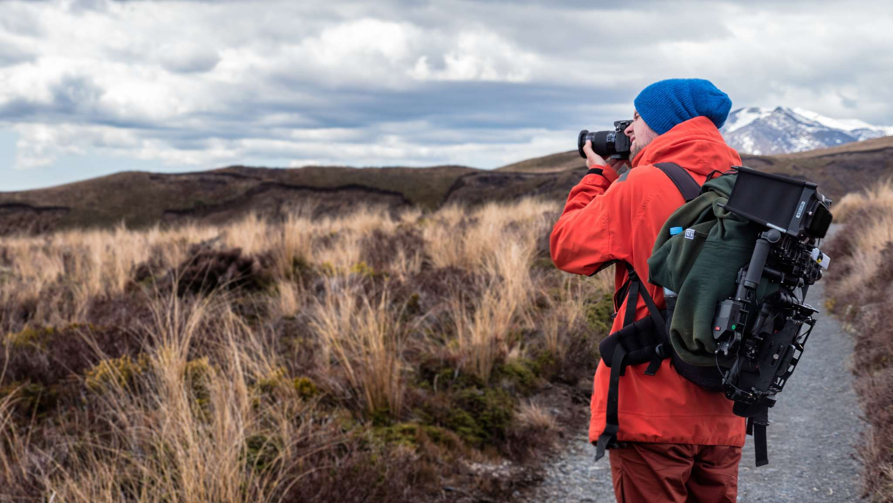

Eiffel Tower, Paris
The symbol of Paris and one of the most photographed structures in the world, a visit to the Eiffel Tower is a must for all travelers. Few landmarks inspire such a passion for travel as this single iron structure..
Petra, Jordan
You may have an Indiana Jones feeling as you walk through a 1.2-kilometer-long narrow crack in the sandstone hills and emerge into a hidden city. First built over 2,000 years ago and lost to the outside world for 600 years, the city was only discovered in 1812.
Stonehenge, England
Stonehenge is one of those places that makes you ponder what went on here over 4,500 years ago. It's long been a mystery to historians, and has captured the imagination of countless visitors. Despite the large number of tourists that descend on Stonehenge, the place still has a mystical feel.
Niagara Falls, Canada
On the border between the United States and Canada, these great falls have been drawing explorers and travelers for centuries. Just over an hour from the city of Toronto, Niagara Falls is easy to get to, and the town is a fun place to spend a night or two.
Mount Fuji
Mount Fuji is the most well-known and highest mountain in Japan. Often pictured snowcapped, this dormant volcano is both a spiritual site and one of the top tourist attractions in Japan. Soaring 3,776 meters high, Mount Fuji is one of three Holy Mountains, all of which are UNESCO World Heritage Sites.
Rio de Janeiro
Keeping a watchful eye over the citizens of Rio de Janeiro from his perch atop Corcovado mountain is the stunning statue of Cristo Redentor. This huge 30-meter-high statue with its arms wide open in a welcoming gesture has been one of Rio's top tourist attractions since 1931.
Prague, Czech Republic
Sitting atop a hill across the river from the center of the city, Prague Castle casts an imposing aura over its surroundings. The castle is an incredible collection of buildings constructed from the 9th to 14th century.

Forbidden City, China
Like the Great Wall, the Forbidden City, also known as the Imperial Palace, in Beijing is one of the top places to visit in China. The sprawling complex dates from the 14th and 15th centuries and is a spectacular example of historical China.
About Me, The Travler

Your adventure buddy
As a traveler, you have a hunger for adventure and a love for experiencing new and intriguing destinations. When you travel, whether for pleasure or business, you're constantly looking for fresh encounters and chances to extend your horizons. Your open mind and sense of curiosity allow you to completely immerse yourself in diverse cultures, meet new people, and create great moments